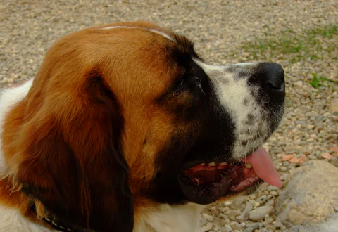
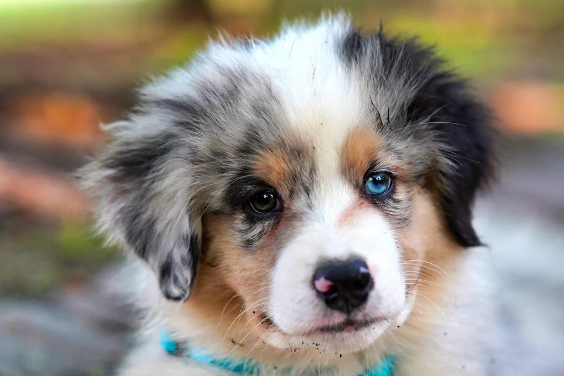
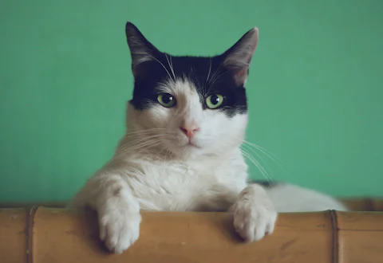
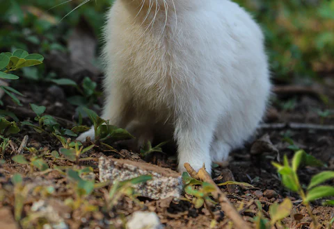

Keep details close
Create a simple pet profile with identification and care details you can refer to later.
A little care goes a long way
Keep important pet details together and meet animals looking for their next home.


Create a simple pet profile with identification and care details you can refer to later.

Filter adoption and pedigree listings by type of pet and learn about each animal.

Read each pet's profile and contact a responsible caregiver before making a decision.
Explore profiles for rabbits and birds as well as familiar four-legged companions.
RegisterPET is a learning project for organizing pet profiles, sharing practical care details, and exploring adoption and pedigree listings. It is not a substitute for professional veterinary advice.